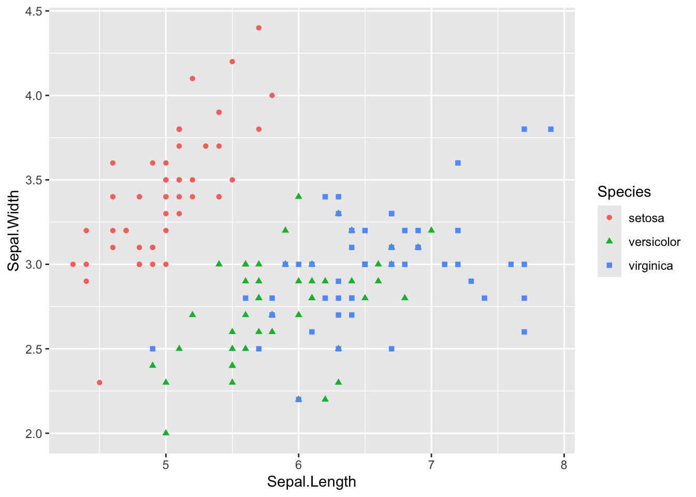
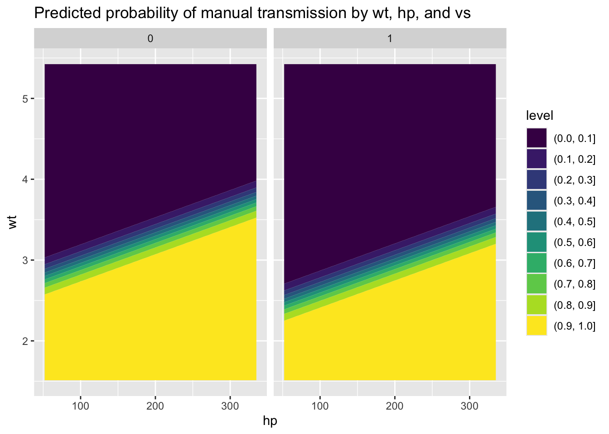
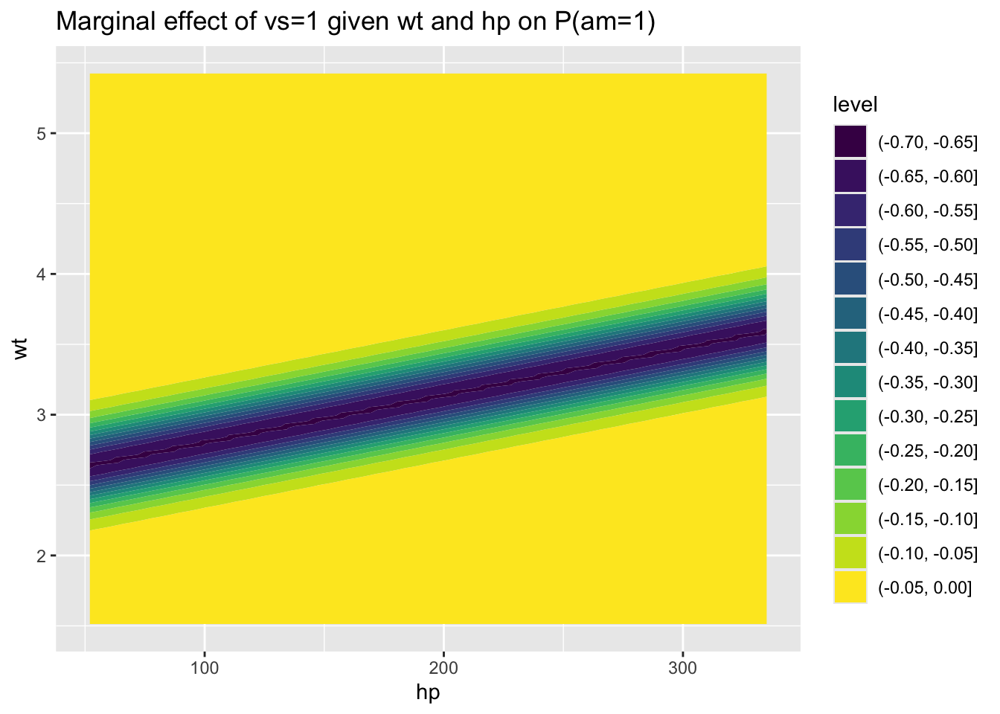
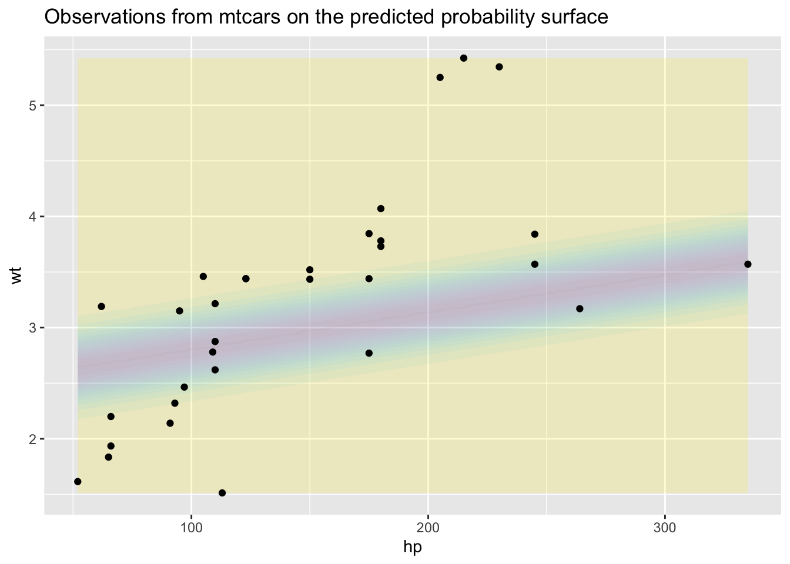
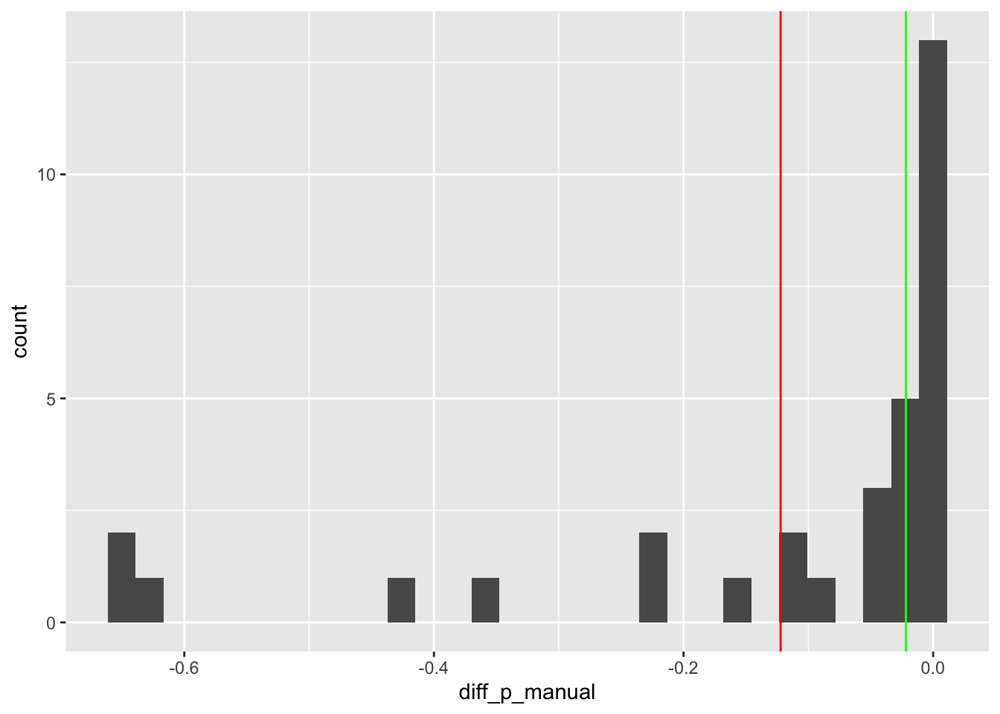

flowchart LR X beta g f alpha theta Y X --> g beta --> g g --> theta theta --> f alpha --> f f --> Y
Introduction to Generalised Linear Models
Aim
The aims of this web page is to provide an overview of generalised linear models, and ways of thinking about modelling that go beyond ‘star-gazing’.
What are statistical models and how are they fit?
It’s common for different statistical methods to be taught as if they’re completely different species or families. In particular, for standard linear regression to be taught first, then additional, more exotic models, like logistic or Poisson regression, to be introduced at a later stage, in an advanced course.
The disadvantage with this standard approach to teaching statistics is that it obscures the way that almost all statistical models are, fundamentally, trying to do something very similar, and work in very similar ways.
Something I’ve found immensely helpful over the years is the following pair of equations:
Stochastic Component
\[ Y_i \sim f(\theta_i, \alpha) \]
Systematic Component
\[ \theta_i = g(X_i, \beta) \]
In words, the above is saying something like:
- The predicted response \(Y_i\) for a set of predictors \(X_i\) is assumed to be drawn from (the \(\sim\) symbol) a stochastic distribution (\(f(.,.)\))
- The stochastic distribution contains both parameters we’re interested in, and which are determined by the data \(\theta_i\), and parameters we’re not interested in and might just have to assume, \(\alpha\).
- The parameters we’re interested in determining from the data \(\theta_i\) are themselves determined by a systematic component \(g(.,.)\) which take and transform two inputs: The observed predictor data \(X_i\), and a set of coefficients \(\beta\)
And graphically this looks something like:
To understand how this fits into the ‘whole game’ of modelling, it’s worth introducing another term, \(D\), for the data we’re using, and to say that \(D\) is partitioned into observed predictors \(X_i\), and observed responses, \(y_i\).
For each observation, \(i\), we therefore have a predicted response, \(Y_i\), and an observed response, \(y_i\). We can compare \(Y_i\) with \(y_i\) to get the difference between the two, \(\delta_i\).
Now, obviously can’t change the data to make it fit our model better. But what we can do is calibrate the model a little better. How do we do this? Through adjusting the \(\beta\) parameters that feed into the systematic component \(g\). Graphically, this process of comparison, adjustment, and calibration looks as follows:
flowchart LR D y X beta g f alpha theta Y diff D -->|partition| X D -->|partition| y X --> g beta -->|rerun| g g -->|transform| theta theta --> f alpha --> f f -->|predict| Y Y -->|compare| diff y -->|compare| diff diff -->|adjust| beta linkStyle default stroke:blue, stroke-width:1px
Pretty much all statistical model fitting involves iterating along this \(g \to \beta\) and \(\beta \to g\) feedback loop until some kind of condition is met involving minimising \(\delta\).
Systematic components and link functions
The two part equation shown above is too general and abstract to be implemented directly. Instead, specific choices about the \(f(.)\) and \(g(.)\) need to be made. King, Tomz, and Wittenberg (2000) gives the following examples:
Logistic Regression
\[ Y_i \sim Bernoulli(\pi_i) \]
\[ \pi_i = \frac{1}{1 + e^{-X_i\beta}} \]
Linear Regression
\[ Y_i \sim N(\mu_i, \sigma^2) \] \[ \mu_i = X_i\beta \]
So, what’s so special about linear regression, in this framework?
In one sense, not so much. It’s got a systematic component, and it’s got a stochastic component. But so do other models. But in another sense, quite a lot. It’s a rare case where the systematic component, \(g(.)\), doesn’t transform its inputs in some weird and wonderful way. We can say that \(g(.)\) is the identity transform, \(I(.)\), which in words means take what you’re given, do nothing to it, and pass it on.
By contrast, the systematic component for logistic regression is known as the logistic function. \(logistic(x) := \frac{1}{1 + e^{-x}}\) It transforms inputs that could be anywhere on the real number line to values that lay somewhere between 0 and 1. Why 0 to 1? Because what logistic regression models produce aren’t predicted values, but predicted probabilities, and nothing can be more probable than certain (1) or less probable than impossible (0).
We can compare the transformations used in linear and logistic regression as follows:1
Code
# Define transformations
ident <- function(x) {x}
lgt <- function(x) {1 / (1 + exp(-x))}
# Draw the associations
curve(ident, -6, 6,
xlab = "x (before transform)",
ylab = "z (after transform)",
main = "The Identity 'Transformation'"
)
curve(lgt, -6, 6,
xlab = "x (before transform)",
ylab = "z (after transform)",
main = "The Logistic Transformation"
)

The usual input to the transformation function \(g(.)\) is a sum of products. For three variables, for example, this could be \(\beta_0 + \beta_1 x_1 + \beta_2 x_2\). In matrix algebra this generalises to \(\boldsymbol{X\beta}\) , where \(\boldsymbol{X}\) is the predictor data whose rows are observations, columns are variables, and whose first column is a vector of 1s (for the intercept term). The \(\boldsymbol{\beta}\) term is a row-wise vector comprising each specific \(\beta\) term, such as \(\boldsymbol{\beta} = \{ \beta_0, \beta_1, \beta_2 \}\) in the three variable example above.
What’s special about the identity transformation, and so linear regression, is that there is a fairly clear correspondence between a \(\beta_j\) term and the estimated influence of changing a predictor variable \(x_j\) on the predicted outcome \(Y\), i.e. the ‘effect of \(x_j\) on \(Y\)’. For other transformations this tends to not be the case.
How to express a linear model as a generalised linear model
In R, there’s the lm function for linear models, and the glm function for generalised linear models.
I’ve argued previously that the standard linear regression is just a specific type of generalised linear model, one that makes use of an identity transformation I(.) for its systematic component g(.). Let’s now demonstrate that by producing the same model specification using both lm and glm.
We can start by being painfully unimaginative and picking using one of R’s standard datasets
Code
library(tidyverse)
iris |>
ggplot(aes(Petal.Length, Sepal.Length)) +
geom_point() +
labs(
title = "The Iris dataset *Yawn*",
x = "Petal Length",
y = "Sepal Length"
) +
expand_limits(x = 0, y = 0)
It looks like, where the petal length is over 2.5, the relationship with sepal length is fairly linear
Code
iris |>
filter(Petal.Length > 2.5) |>
ggplot(aes(Petal.Length, Sepal.Length)) +
geom_point() +
labs(
title = "The Iris dataset *Yawn*",
x = "Petal Length",
y = "Sepal Length"
) +
expand_limits(x = 0, y = 0)
So, let’s make a linear regression just of this subset
Code
iris_ss <-
iris |>
filter(Petal.Length > 2.5) We can produce the regression using lm as follows:
Code
mod_lm <- lm(Sepal.Length ~ Petal.Length, data = iris_ss)And we can use the summary function (which checks the type of mod_lm and evokes summary.lm implicitly) to get the following:
Code
summary(mod_lm)
Call:
lm(formula = Sepal.Length ~ Petal.Length, data = iris_ss)
Residuals:
Min 1Q Median 3Q Max
-1.09194 -0.26570 0.00761 0.21902 0.87502
Coefficients:
Estimate Std. Error t value Pr(>|t|)
(Intercept) 2.99871 0.22593 13.27 <2e-16 ***
Petal.Length 0.66516 0.04542 14.64 <2e-16 ***
---
Signif. codes: 0 '***' 0.001 '**' 0.01 '*' 0.05 '.' 0.1 ' ' 1
Residual standard error: 0.3731 on 98 degrees of freedom
Multiple R-squared: 0.6864, Adjusted R-squared: 0.6832
F-statistic: 214.5 on 1 and 98 DF, p-value: < 2.2e-16Woohoo! Three stars next to the Petal.Length coefficient! Definitely publishable!
To do the same using glm.
Code
mod_glm <- glm(Sepal.Length ~ Petal.Length, data = iris_ss)And we can use the summary function for this data too. In this case, summary evokes summary.glm because it knows the class of mod_glm contains glm.
Code
summary(mod_glm)
Call:
glm(formula = Sepal.Length ~ Petal.Length, data = iris_ss)
Coefficients:
Estimate Std. Error t value Pr(>|t|)
(Intercept) 2.99871 0.22593 13.27 <2e-16 ***
Petal.Length 0.66516 0.04542 14.64 <2e-16 ***
---
Signif. codes: 0 '***' 0.001 '**' 0.01 '*' 0.05 '.' 0.1 ' ' 1
(Dispersion parameter for gaussian family taken to be 0.1391962)
Null deviance: 43.496 on 99 degrees of freedom
Residual deviance: 13.641 on 98 degrees of freedom
AIC: 90.58
Number of Fisher Scoring iterations: 2So, the coefficients are exactly the same. But there’s also some additional information in the summary, including on the type of ‘family’ used. Why is this?
If we look at the help for glm we can see that, by default, the family argument is set to gaussian.
And if we delve a bit further into the help file, in the details about the family argument, it links to the family help page. The usage statement of the family help file is as follows:
family(object, ...)
binomial(link = "logit")
gaussian(link = "identity")
Gamma(link = "inverse")
inverse.gaussian(link = "1/mu^2")
poisson(link = "log")
quasi(link = "identity", variance = "constant")
quasibinomial(link = "logit")
quasipoisson(link = "log")Each family has a default link argument, and for this gaussian family, this link is the identity function.
We can also see that, for both the binomial and quasibinomial family, the default link is logit, which transforms all predictors onto a 0-1 scale, as shown in the last post.
So, by using the default family, the Gaussian family is selected, and by using the default Gaussian family member, the identity link is selected.
We can confirm this by setting the family and link explicitly, showing that we get the same results
Code
mod_glm2 <- glm(Sepal.Length ~ Petal.Length, family = gaussian(link = "identity"), data = iris_ss)
summary(mod_glm2)
Call:
glm(formula = Sepal.Length ~ Petal.Length, family = gaussian(link = "identity"),
data = iris_ss)
Coefficients:
Estimate Std. Error t value Pr(>|t|)
(Intercept) 2.99871 0.22593 13.27 <2e-16 ***
Petal.Length 0.66516 0.04542 14.64 <2e-16 ***
---
Signif. codes: 0 '***' 0.001 '**' 0.01 '*' 0.05 '.' 0.1 ' ' 1
(Dispersion parameter for gaussian family taken to be 0.1391962)
Null deviance: 43.496 on 99 degrees of freedom
Residual deviance: 13.641 on 98 degrees of freedom
AIC: 90.58
Number of Fisher Scoring iterations: 2It’s the same!
How do these terms used in the glm function, family and link, relate to the general framework in King, Tomz, and Wittenberg (2000)?
familyis the stochastic component,f(.)linkis the systematic component,g(.)
They’re different terms, but it’s the same broad framework.
Linear models are just one type of general linear model!
Why only betas look at betas
Why overuse of linear regression leads people to look at models in the wrong way
Though it’s not always phrased this way, a motivating question behind the construction of most statistical models is, “What influence does a single input to the model, \(x_j\), have on the output, \(Y\)?”2 For a single variable \(x_j\) which is either present (1) or absent (0), this is in effect asking what is \(E(Y | x_j = 1) - E(Y | x_j = 0)\) ?3
Let’s look at a linear regression case, then a logistic regression case.
Linear Regression example
Using the iris dataset, let’s try to predict Sepal Width (a continuous variable) on Sepal Length (a continuous variable) and whether the species is setosa or not (a discrete variable). As a reminder, the data relating these three variables look as follows:
Code
library(ggplot2)
iris |>
ggplot(aes(Sepal.Length, Sepal.Width, group = Species, colour = Species, shape = Species)) +
geom_point()
Let’s now build the model:
Code
library(tidyverse)
df <- iris |> mutate(is_setosa = Species == 'setosa')
mod_lm <- lm(Sepal.Width ~ Sepal.Length + is_setosa, data = df)
mod_lm
Call:
lm(formula = Sepal.Width ~ Sepal.Length + is_setosa, data = df)
Coefficients:
(Intercept) Sepal.Length is_setosaTRUE
0.7307 0.3420 0.9855 The coefficients \(\boldsymbol{\beta} = \{\beta_0, \beta_1, \beta_2\}\) are \(\{0.73, 0.34, 0.99\}\), and refer to the intercept, Sepal Length and is_setosa respectively.
If we assume a Sepel Length of 6, for example, then the expected Sepal Width (the thing we are predicting) is 0.73 + 6 * 0.34 + 0.99 or about 3.77 in the case where is_setosa is true, and 0.73 + 6 * 0.34 or about 2.78 where is_setosa is false.
The difference between these two values, 3.77 and 2.78, i.e. the ‘influence of setosa’ on the outcome, is 0.99, i.e. the \(\beta_2\) coefficient shown before. In fact, for any conceivable (and non-conceivable, i.e. negative) value of Sepal Length, the difference is still 0.99.
This is the \(\beta_2\) coefficient, and the reason why, for linear regression, and almost exclusively linear regression, looking at the coefficients themselves provides substantively meaningful information (something King, Tomz, and Wittenberg (2000) calls a ‘quantity of interest’) about the size of influence that a predictor has on a response.
Logistic Regression example
Now let’s look at an example using logistic regression. We will use another tiresomely familiar dataset, mtcars. We are interested in estimating the effect that having a straight engine (vs=1) has on the probability of the car having a manual transmission (am=1). Our model also tries to control for the miles-per-gallon (mpg). The model specification is shown, the model is run, and the coefficeints are all shown below:
Code
mod_logistic <- glm(
am ~ mpg + vs,
data = mtcars,
family = binomial()
)
mod_logistic
Call: glm(formula = am ~ mpg + vs, family = binomial(), data = mtcars)
Coefficients:
(Intercept) mpg vs
-9.9183 0.5359 -2.7957
Degrees of Freedom: 31 Total (i.e. Null); 29 Residual
Null Deviance: 43.23
Residual Deviance: 24.94 AIC: 30.94Here the coefficients \(\boldsymbol{\beta} = \{\beta_0, \beta_1, \beta_2\}\) are \(\{-9.92, 0.54, -2.80\}\), and refer to the intercept, mpg, and vs respectively.
But what does this actually mean, substantively?
(Don’t) Stargaze
A very common approach to trying to answer this question is to look at the statistical significance of the coefficients, which we can do with the summary() function
Code
summary(mod_logistic)
Call:
glm(formula = am ~ mpg + vs, family = binomial(), data = mtcars)
Coefficients:
Estimate Std. Error z value Pr(>|z|)
(Intercept) -9.9183 3.4942 -2.839 0.00453 **
mpg 0.5359 0.1967 2.724 0.00644 **
vs -2.7957 1.4723 -1.899 0.05758 .
---
Signif. codes: 0 '***' 0.001 '**' 0.01 '*' 0.05 '.' 0.1 ' ' 1
(Dispersion parameter for binomial family taken to be 1)
Null deviance: 43.230 on 31 degrees of freedom
Residual deviance: 24.944 on 29 degrees of freedom
AIC: 30.944
Number of Fisher Scoring iterations: 6A common practice in many social and health sciences is to offer something like a narrative summary of the above, something like:
Our logistic regression model indicates that manualness is positively and significantly associated with our measure of fuel efficiency (p < 0.01). There is also an indication of a negative association with straight engine, but this effect does not quite meet conventional thresholds for statistical significance (p < 0.10).
This above practice is known as ‘star-gazing’, because summary tables like those above tend to have one or more * symbols in the final row, if the value of the Pr(>|z|) is below 0.05, and narrative summaries like those just above tend to involve looking at the number of stars in each row, alongside whether the Estimate values have a minus sign in front of them.
Star gazing is a very common practice. It’s also a terrible practice, which - ironically - turns the final presented output of a quantitative model into the crudest of qualitative summaries (positive, negative; significant, not significant). Star gazing is what researchers tend to default to when presented with model outputs from the above because, unlike in the linear regression example, the extent to which the \(\beta\) coefficients answer substantive ‘how-much’-ness questions, like “How much does having a straight engine change the probability of manual transmission?, is not easily apparent from the coefficients themselves.
Standardisation
So, how can we do better?
One approach is to standardise the data that goes into the model before passing them to the model. Standardisation means attempting to make the distribution and range of different variables more similar, and is especially useful when comparing between different continuous variables.
To give an example of this, let’s look at a specification with weight (wt) and horsepower (hp) in place of mpg, but keeping engine-type indicator (vs):
Code
mod_logistic_2 <- glm(
am ~ vs + wt + hp,
data = mtcars,
family = binomial()
)
summary(mod_logistic_2)
Call:
glm(formula = am ~ vs + wt + hp, family = binomial(), data = mtcars)
Coefficients:
Estimate Std. Error z value Pr(>|z|)
(Intercept) 25.35510 11.24613 2.255 0.0242 *
vs -3.12906 2.92958 -1.068 0.2855
wt -9.64982 4.05528 -2.380 0.0173 *
hp 0.03242 0.01959 1.655 0.0979 .
---
Signif. codes: 0 '***' 0.001 '**' 0.01 '*' 0.05 '.' 0.1 ' ' 1
(Dispersion parameter for binomial family taken to be 1)
Null deviance: 43.2297 on 31 degrees of freedom
Residual deviance: 8.5012 on 28 degrees of freedom
AIC: 16.501
Number of Fisher Scoring iterations: 8Here both wt and hp are continuous variables.
A star gazing zombie might say something like
manualness is negatively and significantly associated with weight (p < 0.05); there is a positive association with horsepower but this does not meet standard thresholds of statistical significance (0.05 < p < 0.10).
A slightly better approach would be to standardise the variables wt and hp before passing to the model. Standardising means trying to set the variables to a common scale, and giving the variables more similar statistical characteristics.
Code
standardise <- function(x){
(x - mean(x)) / sd(x)
}
mtcars_z <- mtcars
mtcars_z$wt_z = standardise(mtcars$wt)
mtcars_z$hp_z = standardise(mtcars$hp)
mod_logistic_2_z <- glm(
am ~ vs + wt_z + hp_z,
data = mtcars_z,
family = binomial()
)
summary(mod_logistic_2_z)
Call:
glm(formula = am ~ vs + wt_z + hp_z, family = binomial(), data = mtcars_z)
Coefficients:
Estimate Std. Error z value Pr(>|z|)
(Intercept) -0.9348 1.4500 -0.645 0.5191
vs -3.1291 2.9296 -1.068 0.2855
wt_z -9.4419 3.9679 -2.380 0.0173 *
hp_z 2.2230 1.3431 1.655 0.0979 .
---
Signif. codes: 0 '***' 0.001 '**' 0.01 '*' 0.05 '.' 0.1 ' ' 1
(Dispersion parameter for binomial family taken to be 1)
Null deviance: 43.2297 on 31 degrees of freedom
Residual deviance: 8.5012 on 28 degrees of freedom
AIC: 16.501
Number of Fisher Scoring iterations: 8wt_z is the standardised version of wt, and hp_z is the standardised version of hp. By convention, whereas unstandardised coefficients are usually referred to as \(\beta\) (‘beta’) coefficients, standardised coefficients are instead referred to as \(b\) coefficients. But really, it’s the same model.
Note the p value of wt_z is the same as for wt, and the p value of hp_z is the same as that for hp. Note also the directions of effect are the same: the coefficients on wt and wt_z are both negative, and the coefficients of hp and hp_z are both positive.
This isn’t a coincidence. Of course standardising can’t really add any new information, can’t really change the relationship between a predictor and a response. It’s not really a new variable, it’s the same old variable, so the relationship between predictor and response that there used to be is still there now.
So why bother standardising?
One reason is it gives, subject to some assumptions and caveats, a way of gauging the relative importance of the two different continuous variables, by allowing a slightly more meaningful comparison between the two coefficients.
In this case, we have a standardised \(b\) coefficient of -9.44 for wt_z, and of 2.22 for hp_z. As with the unstandardised coefficients we can still assert that manualness is negatively associated with weight, and positively associated with horsepower. But now we can also compare the two numbers -9.44 and 2.22. The ratio of these two numbers is around 4.3. So, we might hazard to suggest something like:
a given increase in weight is around four times as important in negatively predicting manual transmission (i.e. in predicting an automatic transmission) as an equivalent increase in horsepower is in positively predicting manual transmission.
This isn’t a statement that’s easy to parse, but does at least allow slightly more information to be gleamed from the model. For example, it implies that, if a proposed change to a vehicle leads to similar relative (standardised) increases in both weight and horsepower then, as the weight effect is greater than the horsepower effect, the model will predict a decreased probability of manualness as a result.
But what about the motivating question, “What’s the effect of a straight engine (vs=1) on the probability of manual transmission (am=1)?”
The problem, unlike with the linear regression, is this is now a badly formulated question, based on an incorrect premise. The problem is with the word ‘the’, which implies there should be a single answer to this question, i.e. that the effect of vs on the probability of am=1 should always be the same. But, at least when it comes to absolute changes in the probability of am=1, this is no longer the case, as it depends on the values of the other variables in the model.
Instead of assuming vs=1 has a single effect on P(am=1), we instead need to think about predictions of the marginal effects of vs on am in the context of other plausible values of the other predictors in the model, wt and hp. This involves asking the model a series of well formulated and specific questions.
Maximum marginal effects: Divide-by-four
Before we do that, however, there’s a useful heuristic that can be employed when looking at discrete variables and using a logistic regression specification. The heuristic, which is based on the properties of the logistic function,4 is called divide-by-four. What this means is that, if we take the coefficient on vs of -3.13, and divide this value by four, we get a value of -0.78. Notice that the absolute value of -0.78 is between 0 and 1.5 What this value gives is the maximum possible effect that the discrete variable (the presence rather than absence of a straight engine) has on the probability of being a manual transmission. We can say, “a straight engine reduces the probability of a manual transmission by up to 78%”
But, as mentioned, this doesn’t quite answer the motivating question, it gives an upper bound to the answer, not the answer itself.6 We can instead start to get a sense of ‘the’ effect of the variable vs on P(am=1) by asking the model a series of questions.
Predictions on a matrix
We can start by getting the range of observed values for the two continuous variables, hp and mpg:
Code
min(mtcars$hp)[1] 52Code
max(mtcars$hp)[1] 335Code
min(mtcars$wt)[1] 1.513Code
max(mtcars$wt)[1] 5.424We can then ask the model to make predictions of \(P(am=1)\) for a large number of values of hp and wt within the observed range, both in the condition in which vs=0 and in the condition in which vs=1. The expand_grid function7 can help us do this:
Code
predictors <- expand_grid(
hp = seq(min(mtcars$hp), max(mtcars$hp), length.out = 100),
wt = seq(min(mtcars$wt), max(mtcars$wt), length.out = 100)
)
predictors_straight <- predictors |>
mutate(vs = 1)
predictors_vshaped <- predictors |>
mutate(vs = 0)For each of these permutations of inputs, we can use the model to get a conditional prediction. For convenience, we can also attach this as an additional column to the predictor data frame:
Code
predictions_predictors_straight <- predictors_straight |>
mutate(
p_manual = predict(mod_logistic_2, type = "response", newdata = predictors_straight)
)
predictions_predictors_vshaped <- predictors_vshaped |>
mutate(
p_manual = predict(mod_logistic_2, type = "response", newdata = predictors_vshaped)
)We can see how the predictions vary over hp and wt using a heat map or contour map:
Code
predictions_predictors_straight |>
bind_rows(
predictions_predictors_vshaped
) |>
ggplot(aes(x = hp, y = wt, z = p_manual)) +
geom_contour_filled() +
facet_wrap(~vs) +
labs(
title = "Predicted probability of manual transmission by wt, hp, and vs"
)
We can also produce a contour map of the differences between these two contour maps, i.e. the effect of a straight (vs=1) compared with v-shaped (vs=0) engine, which gets us a bit closer to the answer:
Code
predictions_predictors_straight |>
bind_rows(
predictions_predictors_vshaped
) |>
group_by(hp, wt) |>
summarise(
diff_p_manual = p_manual[vs==1] - p_manual[vs==0]
) |>
ungroup() |>
ggplot(
aes(x = hp, y = wt, z = diff_p_manual)
) +
geom_contour_filled() +
labs(
title = "Marginal effect of vs=1 given wt and hp on P(am=1)"
)
We can see here that, for large ranges of wt and hp, the marginal effect of vs=1 is small. However, for particular combinations of hp and wt, such as where hp is around 200 and wt is slightly below 3, then the marginal effect of vs=1 becomes large, up to around a -70% reduction in the probability of manual transmission. (i.e. similar to the theoretical maximum marginal effect of around -78%).
So, what’s the effect of vs=1 on P(am=1)? i.e. how should we boil down all these 10,000 predicted effect sizes into a single effect size?
I guess, if we have to try to answer this silly question, then we could take the average effect size…
Code
predictions_predictors_straight |>
bind_rows(
predictions_predictors_vshaped
) |>
group_by(hp, wt) |>
summarise(
diff_p_manual = p_manual[vs==1] - p_manual[vs==0]
) |>
ungroup() |>
summarise(
mean_diff_p_manual = mean(diff_p_manual)
)# A tibble: 1 × 1
mean_diff_p_manual
<dbl>
1 -0.0821So, we get an average difference of around -0.08, i.e. about an 8% reduction in probability of manual transmission.
Marginal effects on observed data
Is this a reasonable answer? Probably not, because although the permutations of wt and hp we looked at come from the observed range, most of these combinations are likely very ‘theoretical’. We can get a sense of this by plotting the observed values of wt and hp onto the above contour map:
Code
predictions_predictors_straight |>
bind_rows(
predictions_predictors_vshaped
) |>
group_by(hp, wt) |>
summarise(
diff_p_manual = p_manual[vs==1] - p_manual[vs==0]
) |>
ungroup() |>
ggplot(
aes(x = hp, y = wt, z = diff_p_manual)
) +
geom_contour_filled(alpha = 0.2, show.legend = FALSE) +
labs(
title = "Observations from mtcars on the predicted probability surface"
) +
geom_point(
aes(x = hp, y = wt), inherit.aes = FALSE,
data = mtcars
)
Perhaps a better option, then, would be to calculate an average marginal effect using the observed values, but switching the observations for vs to 1 in one scenario, and 0 in another scenario:
Code
predictions_predictors_observed_straight <- mtcars |>
select(hp, wt) |>
mutate(vs = 1)
predictions_predictors_observed_straight <- predictions_predictors_observed_straight |>
mutate(
p_manual = predict(mod_logistic_2, type = "response", newdata = predictions_predictors_observed_straight)
)
predictions_predictors_observed_vshaped <- mtcars |>
select(hp, wt) |>
mutate(vs = 0)
predictions_predictors_observed_vshaped <- predictions_predictors_observed_vshaped |>
mutate(
p_manual = predict(mod_logistic_2, type = "response", newdata = predictions_predictors_observed_vshaped)
)
predictions_predictors_observed <-
bind_rows(
predictions_predictors_observed_straight,
predictions_predictors_observed_vshaped
)
predictions_marginal <-
predictions_predictors_observed |>
group_by(hp, wt) |>
summarise(
diff_p_manual = p_manual[vs==1] - p_manual[vs==0]
)
predictions_marginal |>
ggplot(aes(x = diff_p_manual)) +
geom_histogram() +
geom_vline(aes(xintercept = mean(diff_p_manual)), colour = "red") +
geom_vline(aes(xintercept = median(diff_p_manual)), colour = "green")
In the above the red line indicates the mean value of these marginal differences, which is -0.12, and the green line the median value of these differences, which is around -0.02. So, even with just these two measures of central tendency, there’s around a six-fold difference in the estimate of ‘the effect’. We can also see there’s a lot of variation, from around nothing (right hand side), to around a 65% reduction (left hand side).
If forced to give a simple answer (to this overly simplistic question), we might plump for the mean for theoretical reasons, and say something like “The effect of a straight engine is to reduce the probability of a manual transmission by around an eighth”. But I’m sure, having seen how much variation there is in these marginal effects, we can agree this ‘around an eighth’ answer, or any single number answer, is likely to be overly reductive.
Hopefully, however, it is more informative than ‘statistically significant and negative’, (the stargazing approach) or ‘up to around 78%’ (the divide-by-four approach).
Conclusion
Linear regression tends to give a false impression about how straightforward it is to use a model to answer questions of the form “What is the effect of x on y?”. This is because, for linear regression, but few other model specifications, the answer to this question is in the \(\beta\) coefficients themselves. For other model specifications, like the logistic regression example above, the correct-but-uninformative answer tends to be “it depends”, and potentially more informative answers tend to require a bit more work to derive and interpret.
Page discussion
This section of the course has aimed to reintroduce statistics from the perspective of generalised linear models (GLMs), in order to make the following clearer:
- That linear regression is just one member of a broader ‘family’ of regression models
- That all regression models can be thought of as just ‘types’ of GLM, with more in common than divides them
- That we can and should aim for substantive significance when using the outputs of GLMs, i.e. use them for prediction and simulation rather than focus on whether individual coefficients are ‘statistically significant’ or not.
The next section of the course delves further into the fundamentals of model fitting and statistical inference, including likelihood theory.
References
King, Gary, Michael Tomz, and Jason Wittenberg. 2000. “Making the Most of Statistical Analyses: Improving Interpretation and Presentation.” American Journal of Political Science 44: 341355. http://gking.harvard.edu/files/abs/making-abs.shtml.
Footnotes
Note here I’m using \(x_j\), not \(x_i\), and that \(X\beta\) is shorthand for \(\beta_0 + \beta_1 x_1 + \beta_2 x_2 + \beta_3 x_3\) and so on. In using the \(j\) suffix, I’m referring to just one of the specific \(x\) values, \(x_1\), \(x_2\), \(x_3\), which is equivalent to selecting one of the columns in \(X\). By contrast \(i\) should be considered shorthand for selection of one of the rows of \(X\), i.e. one of the series of observations that goes into the dataset \(D\).↩︎
Note here I’m using \(x_j\), not \(x_i\), and that \(X\beta\) is shorthand for \(\beta_0 + \beta_1 x_1 + \beta_2 x_2 + \beta_3 x_3\) and so on. In using the \(j\) suffix, I’m referring to just one of the specific \(x\) values, \(x_1\), \(x_2\), \(x_3\), which is equivalent to selecting one of the columns in \(X\). By contrast \(i\) should be considered shorthand for selection of one of the rows of \(X\), i.e. one of the series of observations that goes into the dataset \(D\).↩︎
\(E(.)\) is the expectation operator, and \(|\) indicates a condition. So, the two terms mean, respectively, what is the expected value of the outcome if the variable of interest is ‘switched on’?, and what is the expected value of the outcome if the variable of interest is ‘switched off’?↩︎
The logistic function maps any real number
zonto the value range 0 to 1.zis \(X\beta\), which in non-matrix notation is equivalent to a sum of products \(\sum_{k=0}^{K}x_k\beta_k\) (where, usually, \(x_0\) is 1, i.e. the intercept term). Another way of expressing this would be something like \(\sum_{k \in S}x_k\beta_k\) where by default \(S = \{0, 1, 2, ..., K\}\). We can instead imagine partitioning out \(S = \{S^{-J}, S^{J}\}\) where the superscript \(J\) indicates the Jth variable, and \(-J\) indicates everything in \(S\) apart from the Jth variable. Where J is a discrete variable, the effect of J on \(P(Y=1)\) is \(logistic({\sum_{k \in S^{-J}}x_k\beta_k + \beta_J}) - logistic({\sum_{k \in S^{-J}}x_k\beta_k})\), where \(logistic(z) = \frac{1}{1 + e^{-z}}\). The marginal effect of the \(\beta_J\) coefficient thus depends on the other term \(\sum_{k \in S^{-J}}x_k\beta_k\). Where this other term is set to 0 the marginal effect of \(\beta_J\) becomes \(logistic(\beta_J) - logistic(0)\). According to p.82 of this chapter by Gelman we can equivalently ask the question ‘what is the first derivative of the logistic regression with respect to \(\beta\)?’. Asking more about this to Wolfram Alpha we get this page of information, and scrolling down to the section on the global minimum we indeed get an absolute value of \(\frac{1}{4}\), so the maximum change in \(P(Y=1)\) given a unit change in \(\beta\) is indeed one quarter of the value of \(\beta\), hence why the ‘divide-by-four’ heuristic ‘works’. This isn’t quite a full derivation, but more explanation than I was planning for a footnote! In general, it’s better just to remember ‘divide-by-four’ than go down the rabbit warren of derivation each time! (As I’ve just learned, to my cost, writing this footnote!)↩︎We should always expect the absolute value of a coefficient for a discrete variable to be less than four, for this reason.↩︎
The lower bound for the marginal effect of a discrete variable, or any variable, is zero. This is when the absolute value of the sum of the product of the other variables is infinite.↩︎
Or the base R
expand.gridfunction↩︎